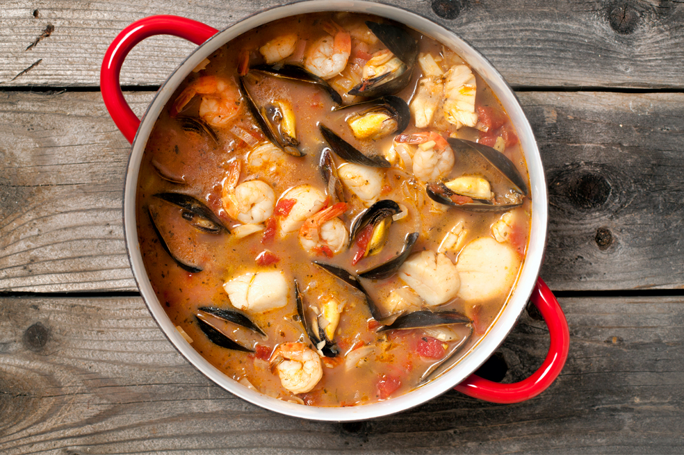
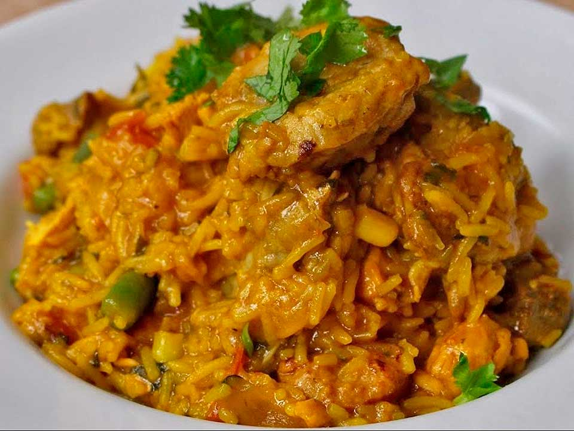
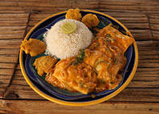
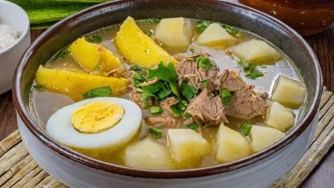
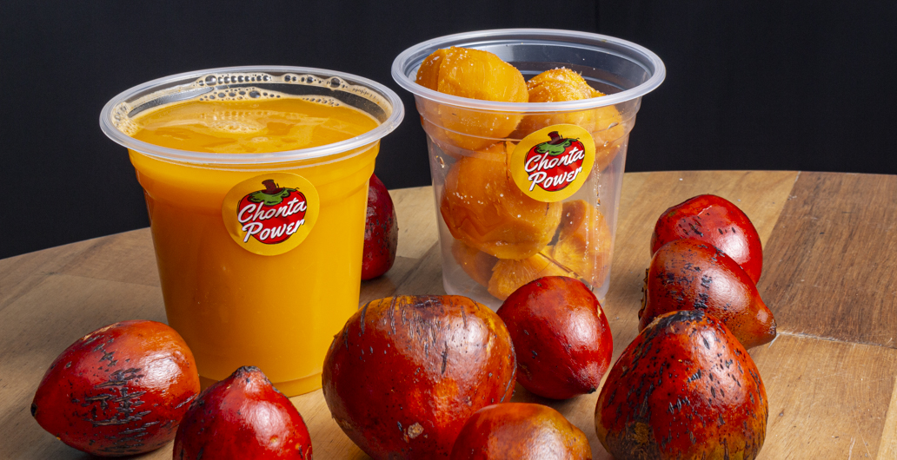
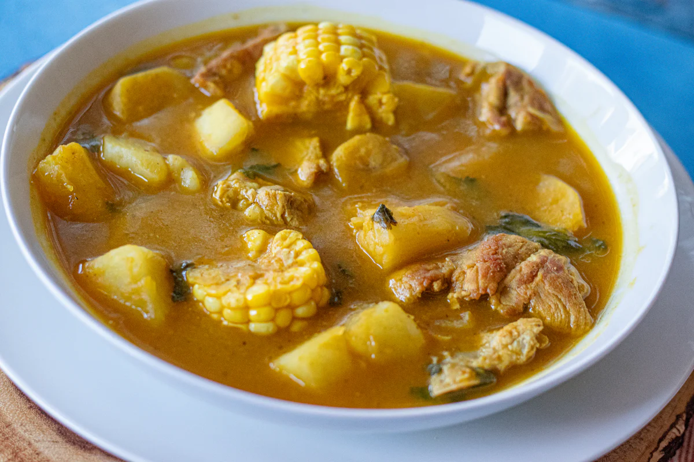
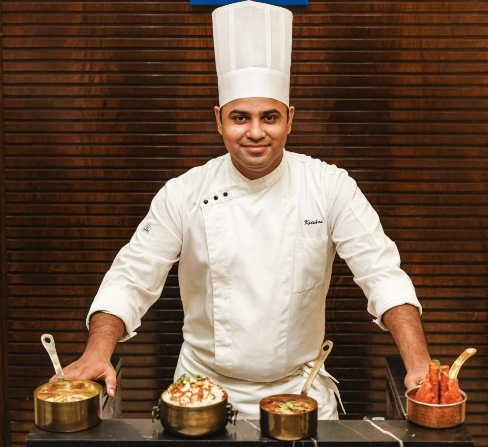

Cocina del Pacífico Colombiano
Sabores auténticos, tradición viva y el mejor mariscos del Valle del Cauca
Nuestra carta

Cazuela de mariscos
Mezcla de camarones, calamares y mejillones en salsa de coco.
Precio: 38.000COP

Arroz con Jaiba
Arroz cremoso con jaiba fresca, ají dulce y cilantro.
Precio: 32.000COP

Encocado de Pescado
Filete de corvina en salsa de coco con patacones.
Precio: 35.000COP

Pusandao de Carne
Sopa tradicional con carne de res, plátano y yuca.
Precio: 28.000COP

Chontaduro Relleno
Chontaduro asado relleno de mariscos y queso costeño.
Precio: 22.000COP

Sancocho de Gallina
Gallina criolla con papa, yuca y mazorca. Tradición pura.
Precio: 30.000COP

Carlos Andrade
Chef principal
Con más de 15 años de experiencia en cocina del Pacífico, Carlos ha dedicado su vida a preservar las recetas ancestrales de su abuela en Buenaventura.
Formado en el Instituto Gastronómico de Cali y con pasantías en México y Perú, combina técnica internacional con alma colombiana.
Su filosofía es simple: ingredientes frescos, fuego lento y mucho amor por la tierra.
"La cocina del Pacífico no es solo comida — es identidad, memoria y resistencia."